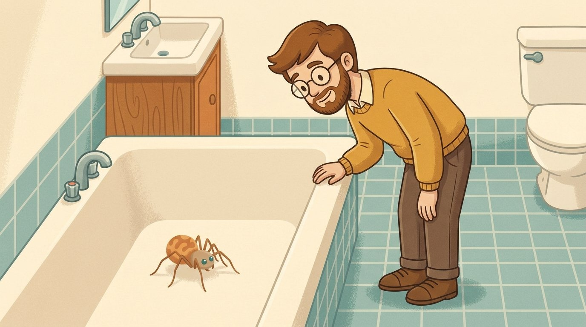

The Backyard Library
Why, Dad? Labs
A little game or model for every episode, so you can try the idea yourself after you watch. Free, nothing to install, nothing to sign up for.

Episode 20 · Spiders in the house
The Spider Lab
Get him out of the tub, climb it yourself by balancing his grip, then take a flashlight through ten dark houses and count the spiders.
Play →⚡
Episode 19 · Where electricity comes from
The Electricity Lab
Push the electrons yourself and see why your electricity is one second old, then climb the voltage staircase from the power plant to your lamp.
Try it →